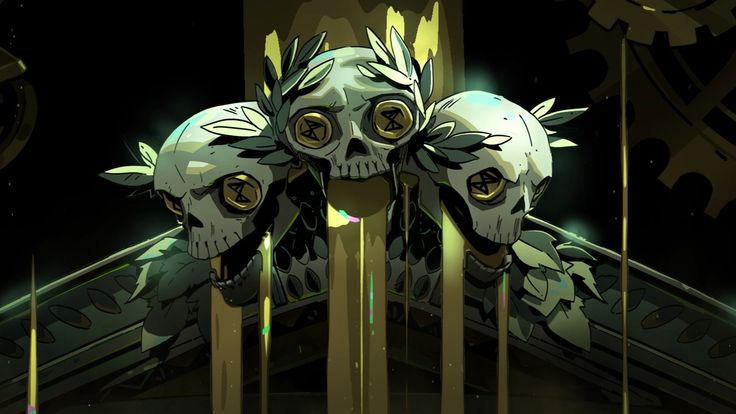
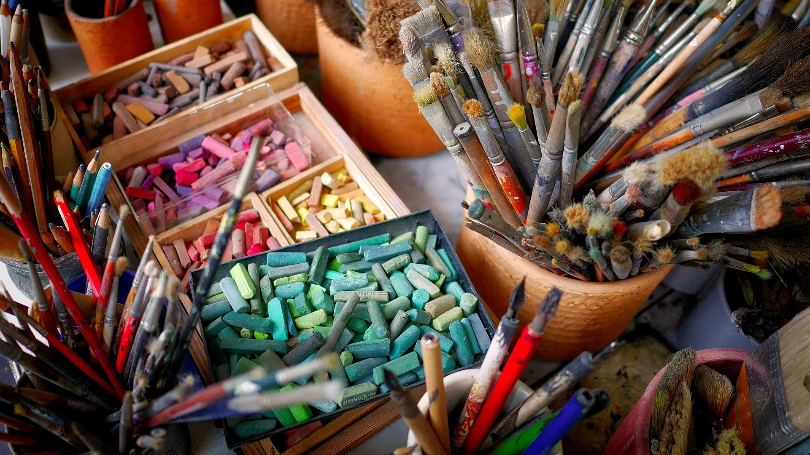
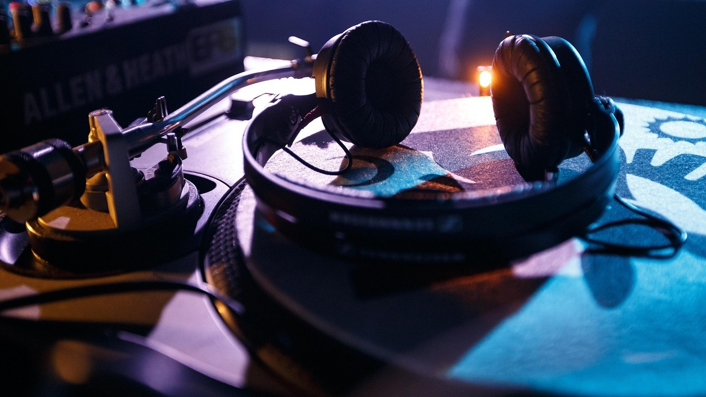
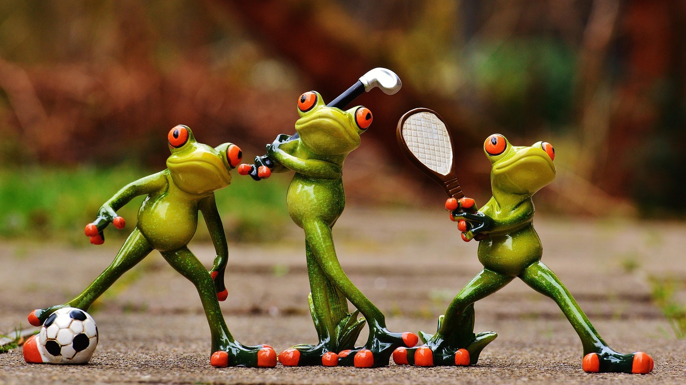

Nasci 22/04/2008 em brasília, nunca me mudei, família sempre foi estável, nunca passei por dificuldades na infância. Estudei a vida inteira no "Colégio Santo Antônio", era um ambiente muito tranquilo, sempre fui um aluno mais na minha, sinto dificuldades para me comunicar até hoje, e os sinais já eram perceptiveis na infância. Gosto de jogar(acabo ssendo uma pessoa muito competitiva por causa disso), escutar música, de vez em quando de desenhar, e eu AMO mas AMO comer pão de queijo. Em tempos de pandemia minha paixão por jogos se intensificaram e fiquei curioso por saber como era feito, depois de descobrir como era feito, uma nova vontade na minha vida havia surgido, estou decidido que um dia, eu ainda vou querer fazer um jogo. Vejo os jogos como obras de artes, eles tem estéticas, tipos, mensagens para passar, personagens para se conectar, e mundos para se apegar. E é por isso que estou cursando a área de engenharia de software na UDF.
Em questão de projetos, possuo dois GitHub's, um tinha utilizado o meu e-mail pessoal(oq me arrependo bastante), lá estão alguns códigos de python feitos para atividades da faculdade primeiro semestre. O meu segundo GitHub, utilizei um e-mail profissional, não tem muita coisa ainda, mas logo logo vou colocar os prompts em C, e os prompts de data base feitos, ambos, no segundo semeste de faculdade

Uma das minhas maiores paixões nessa vida são os jogos. Eles me proporcionam novas histórias para conhecer, personagens para simpatizar, geram alívio de estres(ou não, depende do jogo). O meu jogo favorito é Hades II, fico triste apenas por uma coisa nesse jogo, é a falta de reconhecimento dele, é muito difícil encontrar conteúdo br desse jogo.
Meu perfild de jogos
Desde criança, eu sempre gostei de desenhar, tanto pelo meu irmão, quanto pelas animações que eu assistia. Eu ainda estou buscando melhorar, tenho noção que meus desenhos são falhos, mas está tudo bem, ainda sou sser humano. Gosto de desenhar em papel e em um programa de pixel art, tenho vontade de desnhar em tela e colorir os meus desnhos físicos.
Pefil de desenhos
Eu amo fazer as coisas com música, ela me ajuda a controlar a minha ansiedade e focar nas minhas atividades do dia a dia, talvez eu tenha criado um dependencia. Gosto de escutar vários tipos de música, só não suporto sertanejo universitário, é quase obra do diabo esse tipo de música.
Spotify
Pode não parecer, mas eu ou uma pessoas que gosta de faazer esportes, só preciso fazer uma luta antes de começar, mas quando começo, ''e ssem freio até me machucar. Sempre joguei futebol, posso fazer várias funções, tnto de goleiro como atacante. Já joguei alguns campeonatos no clube vizinhaça e na minha escola, no vizinhaça ganhei um troféu de melhor goleiro do campeonato, mas depois da pandemia as coisas desandaram.